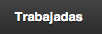

Ayuda
CerrarHoras Extras
Esta aplicación está destinada al control de los tiempos u horas extras que desarrollamos en nuestro empleo.El usuario potencial es el trabajador de centros comerciales, o locales de venta al público en general, dado el particular horario que tienen que desarrollar, donde pueden encontrarse en situaciones de trabajar determinadas horas fuera de su horario o turno asignado, y con algunas características especiales, como tener que trabajar en días festivos, u horas extraordinarias previas a festivos especiales (día de Reyes, por ejemplo).
No obstante, configurando la aplicación de determinadas formas, se puede extender el uso a usuarios de distintos entornos laborales.
Para el correcto uso de esta aplicación es necesario que esté bien configurada.
Elementos de navegación:
Acceso a la configuraciónVisualización de las horas disponibles
 Lista de horas extras trabajadas
Lista de horas disfrutadas
Creación de nueva entrada, de hora extra o disfrutada
Configuración:
Insertaremos en cada campo la relación correspondiente al tiempo que nos conceden por cada hora extra trabajada. Usaremos el concepto "1 hora equivale a...".Usaremos los 3 campos predefinidos para 3 posibles situaciones.
1. Jornada laboral:
Tiempo concedido por el equivalente a 1 hora de trabajo en un día "normal", dentro del horario habitual, aunque fuera del horario asignado a mi turno.
2. Horario nocturno:
Tiempo concedido por el equivalente a 1 hora después de la hora de cierre.
3. Jornada festiva:
Tiempo concedido por el equivalente a 1 hora, cuando se trabaja a partir de las 24:00, "entrando" en un día festivo.
Horas
En esta ventana visualizamos el tiempo que hemos acumulado por el trabajo realizado en periodos de "horas extras".Será por tanto, el tiempo que podremos solicitar como descanso para determinadas jornadas.
El valor se actualizará automáticamente según las entradas de "trabajadas" o "disfrutadas" que incluyamos en el sistema.
Horas
En esta ventana visualizamos el tiempo que hemos acumulado por el trabajo realizado en periodos de "horas extras".Será por tanto, el tiempo que podremos solicitar como descanso para determinadas jornadas.
El valor se actualizará automáticamente según las entradas de "trabajadas" o "disfrutadas" que incluyamos en el sistema.
Desde aquípodremos acceder también a la conficugración y a esta propia ayuda.
Trabajadas
En este apartado visualizamos el listado de las entradas de horas extras que hemos trabajado.Cada entrada estará representada por una fila, en la cual visualizaremos los datos correspondientes a la fecha de la jornada trabajada, horario de inicio y fin de esas horas extras, y el tiempo que acumula esta entrada al total de horas extras.
Pulsando en una fila accedermos a la información que se ingresó en su momento, con la posibilidad de poder editar o eliminarla.
Crear una entrada "Trabajada"
Pulsaremos en el botón "Nueva".
Nos mostrará el formulario de creación. Tan solo debemos rellenar los campos que aparecen y guardar dicha entrada.
En el momento de guardar la entrada, el sistema calculará el tiempo que nos deben conceder por el exceso de jornada, en base a los criterios de la configuración y de los valores ingresados para esta entrada.
Información de los campos:
- Fecha: Seleccionamos la fecha de la jornada trabajada.
- Hora Inicio: Hora en la que se inicia el trabajo, fuera de nuestro horario "normal".
- Hora Fin: Hora en la que terminamos de trabajar este periodo extra.
- ¿Termina en festivo?: Si/No. Indicamos si terminamos este trabajo "extra" en una jornada la cual es festivo. Un ejemplo sería terminar una jornada la noche de Reyes.
- Comentario: Opcional. Escribiremos un texto que nos pueda ser útil para anotar algo.
Una vez creada una entrada se calcularán los tiempos y se sumarán al que ya tuviéramos. Tenemos la posibilidad de editar cualquier entrada ya creada, y que se recalculen los tiempos.
Disfrutadas
En este apartado visualizamos el listado de las entradas de horas que hemos disfrutado como "libres". Es decir, tiempo que nos han dado de permiso, a cambio de tiempo de horas extras trabajados en otras jornadas.Cada entrada estará representada por una fila, en la cual visualizaremos los datos correspondientes a la fecha de la jornada disfrutada y el tiempo que resta esta entrada al total de horas extras.
Pulsando en una fila accedermos a la información que se ingresó en su momento, con la posibilidad de poder editar o eliminarla.
Crear una entrada "Disfrutada"
Pulsaremos en el botón "Nueva".
Nos mostrará el formulario de creación. Tan solo debemos rellenar los campos que aparecen y guardar dicha entrada.
En el momento de guardar la entrada, el sistema calculará el tiempo que hemos disfrutado de "tiempo libre" y lo restará al tiempo acumulado en el total.
Información de los campos:
- Fecha: Seleccionamos la fecha de la jornada disfrutada.
- Tiempo disfrutado: Tiempo libre que nos han concedido y hemos disfrutado.
- Comentario: Opcional. Escribiremos un texto que nos pueda ser útil para anotar algo.
Una vez creada una entrada se calcularán los tiempos y se restarán al que ya tuviéramos. Tenemos la posibilidad de editar cualquier entrada ya creada, y que se recalculen los tiempos.